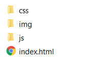

Genius
The Apache Cordova is one of the best known technologies to create modern cross-platform mobile applications. This framework allows to create applications using standard HTML5 technology stack in order to build mobile apps for Android and iOS mobile devices. It is required from developer to have basic competencies in classical technologies like html, css and javascript.
In order to begin work with Cordova environment we have to install Node.js application. This will require administrator privileges on the system. The Node.js environment contains npm - nodejs packet manager that allow to install new packages/application into our system. Using npm we can easily install Cordova by writing in command line:
npm install -g cordova
This -g switch will install cordova for all users, if someone wants to install Cordova only for active user have to omit -g parameter.
Now we are ready to create first Cordova app, for that let us create a new directory somewhere in the system and go into this folder.
mkdir CordovaApps cd CordovaApps
Now we should invoke command:
cordova create FirstCordovaApp
This will create a folder with prepared template of Cordova application. The prepared folder contains a few subfolders the most important from the point of view of game developer is www. The rest of subfolders we can treat as internal Cordova folder and let them be.
Just for start we can try to run the project, first we have to add a platform (i.e. the platform we would like to use as deployment machine). In Cordova we have many platforms to choose in this course we will use only Browser for first level debugging, and Android or iOS for second level debugging and final deployment.
cd FirstCordovaApp cordova platform add browser
And run the created simple starting project
cordova run browser
We should see some information in the terminal and our default browser should open an address http://localhost:8000/index.html. We will see simple page with Cordova logo and a text: device is ready.
Now let us look what is a content of www folder and what lines in the code makes the browser to show this screen ref{fig.basic_app}.

We can see specific folders for css, img and js files respectively and one file index.html.
When we open index.html file we will notice the main two parts contained in <head> and <body> tags. At the moment let us ignore <head> part as there is not too many interesting elements and focus on <body>
<body>
<div class="app">
<h1>Apache Cordova</h1>
<div id="deviceready" class="blink">
<p class="event listening">Connecting to Device</p>
<p class="event received">Device is Ready</p>
</div>
</div>
<script type="text/javascript" src="cordova.js"></script>
<script type="text/javascript" src="js/index.js"></script>
</body>
W can notice a few things:
Let us now look into js/index.js file
How it works: when the page is finally loaded the Cordova environment fire an event 'deviceready', this implies that bind method onDeviceReady is invoked. In the result the method receivedEvent is started with appropriate value of parameter id. In this method the elements with class "listening" becomes invisible while the ones with "received" becomes visible.
Explanation line by line:
As was mentioned Cordova environment uses a special event 'deviceready'. By default Cordova has more specially defined events, some of them works for all platforms some only for Android (see https://cordova.apache.org/docs/en/latest/cordova/events/events.html):
| 'deviceready': | The deviceready event fires when Cordova is fully loaded. |
| 'pause': | The pause event fires when the native platform puts the application into the background. |
| 'resume': | The resume event fires when the native platform pulls the application out from the background. |
| 'backbutton': | The event fires when the user presses the back button. |
| 'menubutton': | The event fires when the user presses the menu button. |
| 'searchbutton': | The event fires when the user presses the search button on Android. |
| 'volumedownbutton': | The event fires when the user presses the volume down button. |
| 'volumeupbutton': | The event fires when the user presses the volume up button. |
It should be noted that Cordova prefers SPA architecture (Single Page Applications) i.e. there is only one url address, all changes of the interface are done within one javascript file and using ajax queries.
If someone do not want to use command line and nodejs environment, there is always a possibility to use Cordova within Visual Studio environment https://visualstudio.microsoft.com/vs/features/cordova/. However this can lead to duplicate android sdk environment as Visual Studio prefers to use everything internal. If someone do not want to use command line and nodejs environment, there is always a possibility to use Cordova within Visual Studio environment https://visualstudio.microsoft.com/vs/features/cordova/. However this can lead to duplicate android sdk environment as Visual Studio prefers to use everything internal.
Copyright Genius.